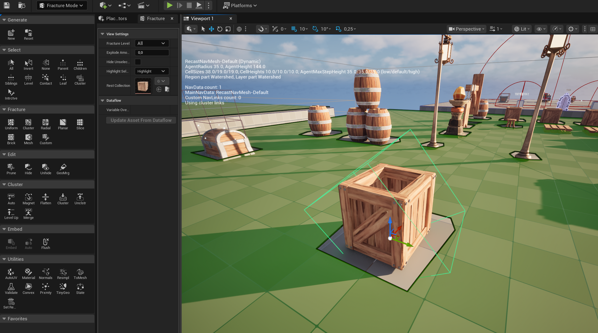

// 01 — gameplay showcase
Player Systems
Four gameplay habilities implemented: Melee Attack for close combat situations,
Range Attack for further enemies, stun, and mortar weaks, Dash for arcade
movement, avoid enemies and fast hits, and Beerserker Mode as ultimate for push enemies and
buff the player.

Melee

Ranged

Dash

Beerserker
// 02 — Chaos Destruction
Class that have damageable interface implemented and when health goes to zero it breaks using chaos destruction
system.
Geometry Collection
First we need to create a Geometry Collection from the mesh we want to break.

Geometry Collection
Levels of Destruction
Then we need to fracture the geometry collection as we want in order to get the desired effect.

Fracture
Break
In our case we set the collision preset and if the player hit these destructibles then will apply an external
strain and a radial impulse to simulate with chaos the destruction.

Destruction
// 03 — particles
Niagara Systems
I have created two niagara systems: The Beerserker aura and the beerserker shockwave.
Beerserker Aura
Aura that activates when the player can go full beerserker and when is on this mode (red and blue).

Beerserker shockwave
When the player activates the beerserker mode.

// 04 — challenges & solutions
Problems I Solved